Portfólio
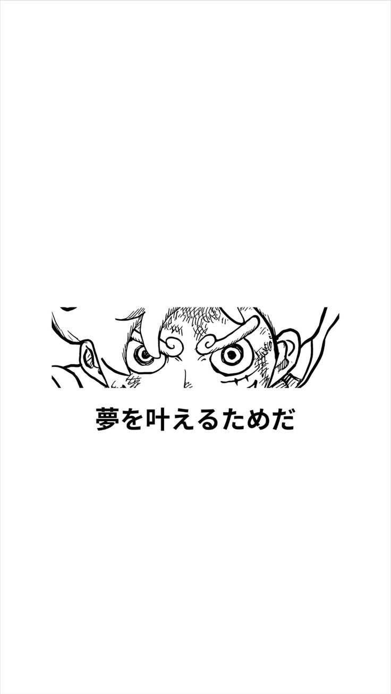 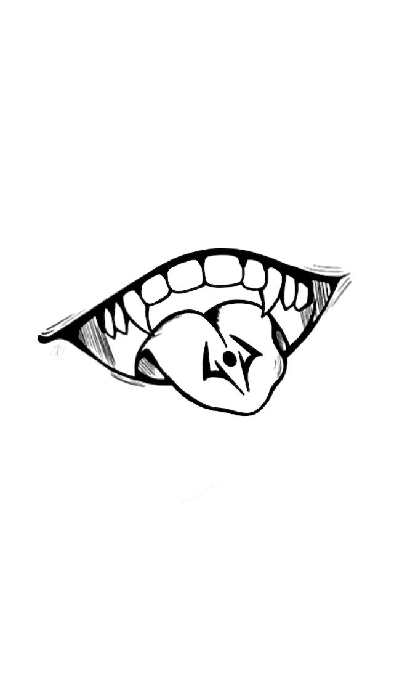
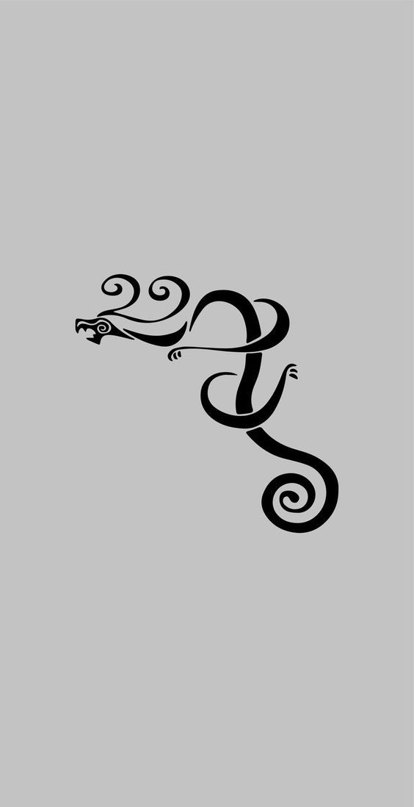
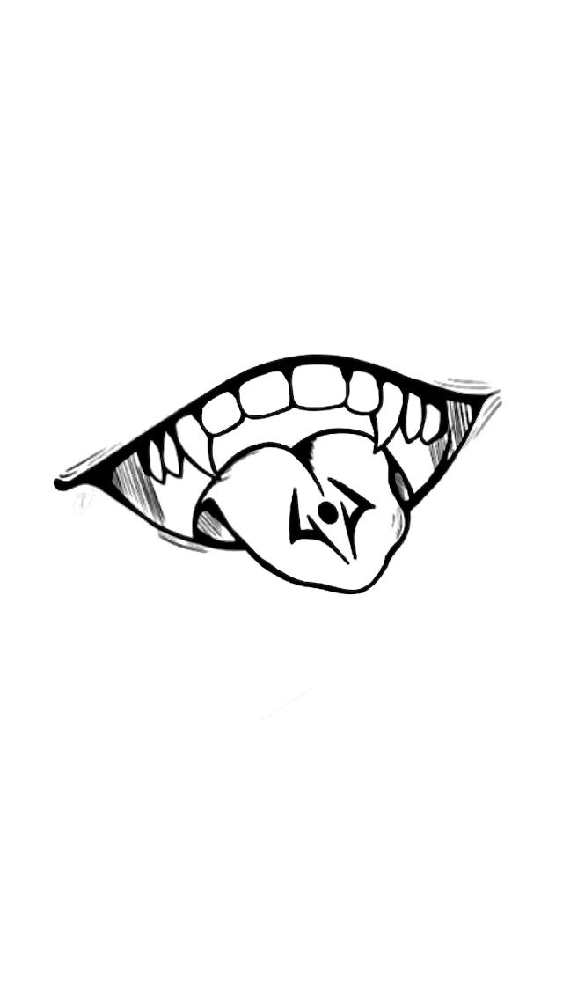
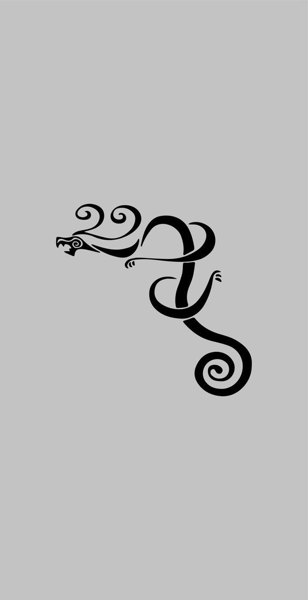

 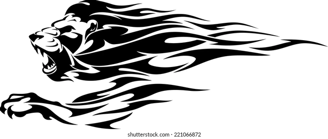
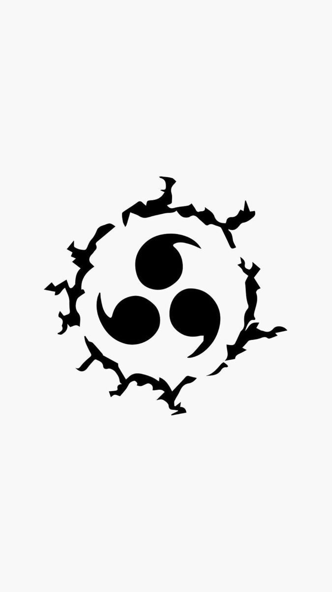
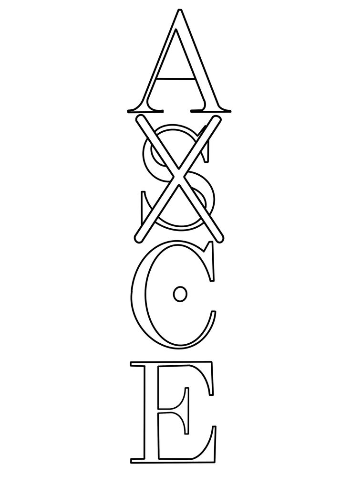
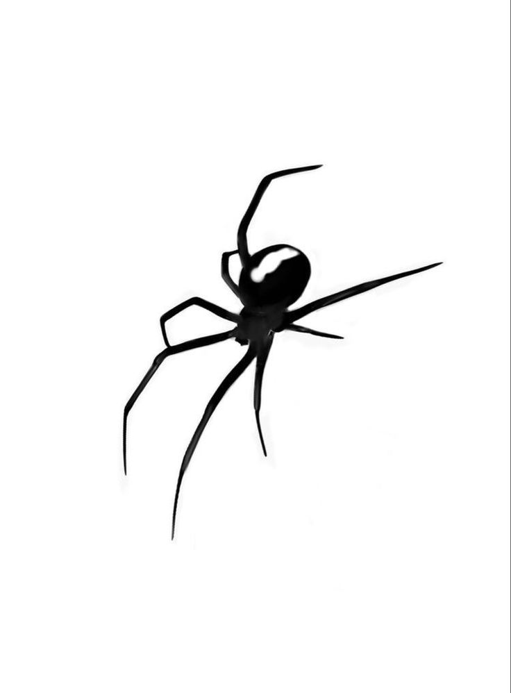
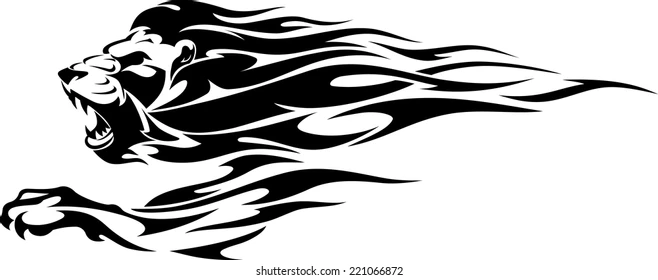
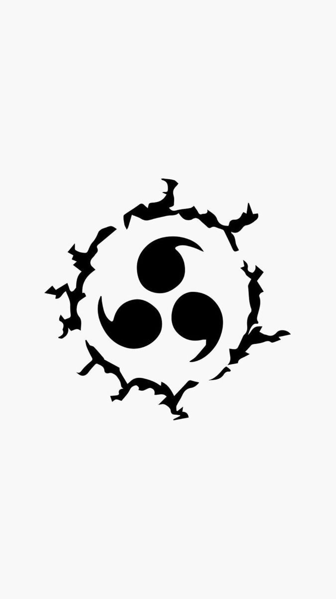
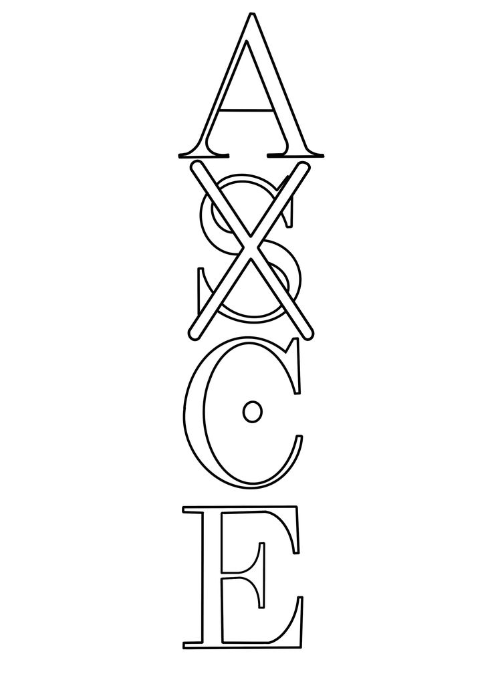
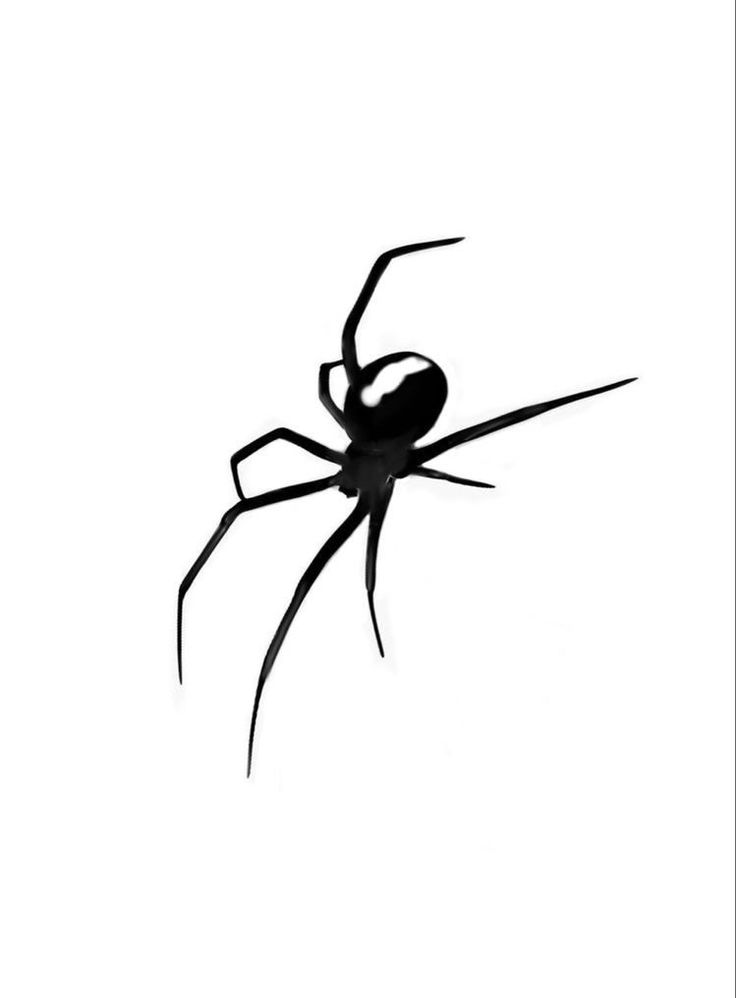
Imagens de tattoo
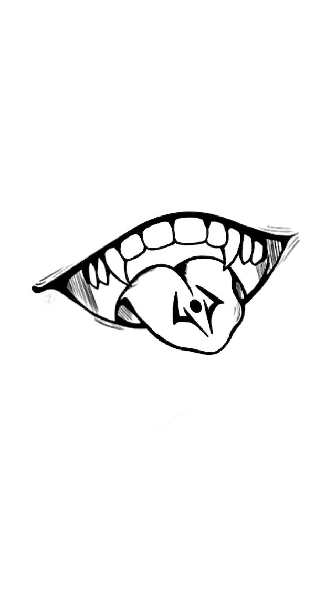
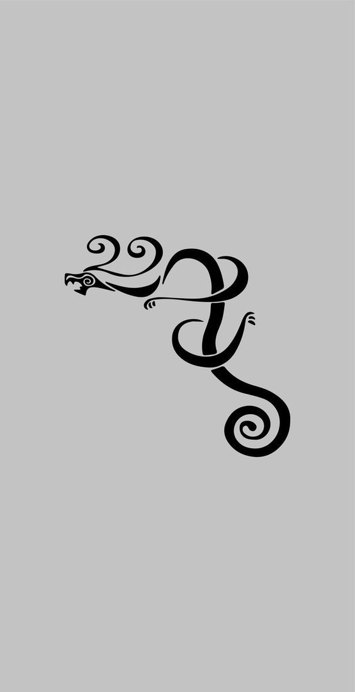
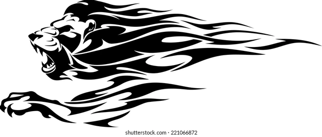
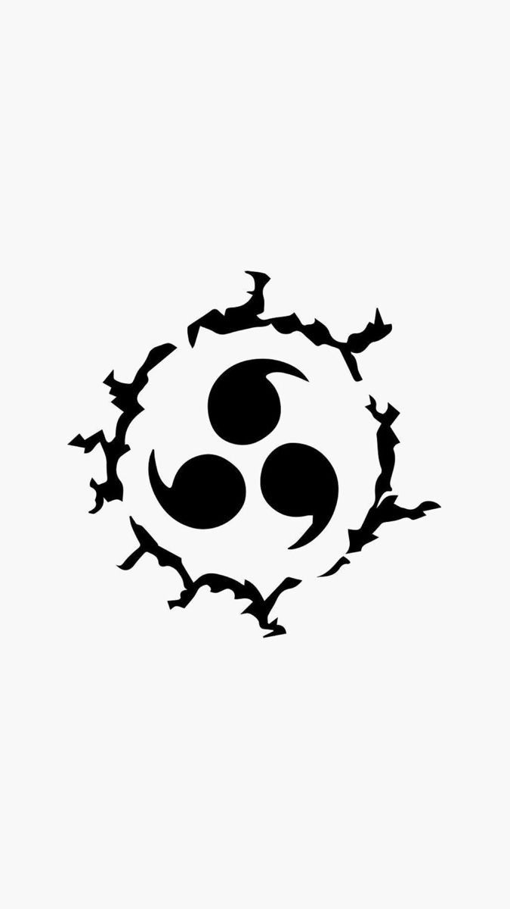
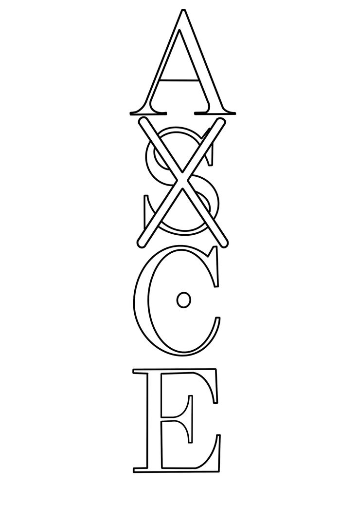
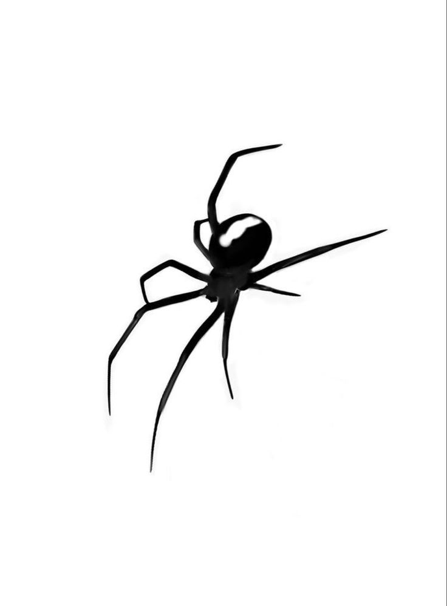
Sobre Nós
Bem-vindo ao [Nome do Estúdio], um espaço dedicado à arte da tatuagem e à expressão pessoal. Fundado por [seu nome] e uma equipe de tatuadores experientes, nosso estúdio é mais do que um lugar para fazer tatuagens – é um ambiente acolhedor e profissional, onde cada cliente é tratado com respeito e cuidado.
Aqui, trabalhamos com diferentes estilos de tatuagem, incluindo [listar estilos: realismo, tradicional, geométrico, aquarela, etc.], e nosso objetivo é transformar suas ideias em arte única e personalizada. Cada tatuagem é feita com atenção aos detalhes, garantindo qualidade e segurança em todo o processo.
Nosso compromisso com a higiene e com o bem-estar dos clientes é absoluto, seguindo rigorosamente todas as normas de segurança e esterilização. Além disso, buscamos proporcionar uma experiência tranquila e confortável, desde o primeiro contato até a finalização da sua tatuagem.
Se você está em busca de uma tatuagem que tenha significado e seja feita por profissionais apaixonados, estamos prontos para ajudá-lo a criar sua próxima obra de arte.
Visite-nos e faça parte dessa jornada criativa!
[Informações de contato ou link para portfólio]